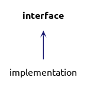
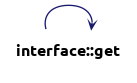

interface Struct Referenceabstract
https://en.wikipedia.org/wiki/Dependency_inversion_principle More...
Inheritance diagram for interface:

Public Member Functions | |
| virtual int | get ()=0 |
Detailed Description
Member Function Documentation
◆ get()
|
pure virtual |
Implemented in implementation.
Here is the call graph for this function:

Here is the caller graph for this function:

The documentation for this struct was generated from the following file: